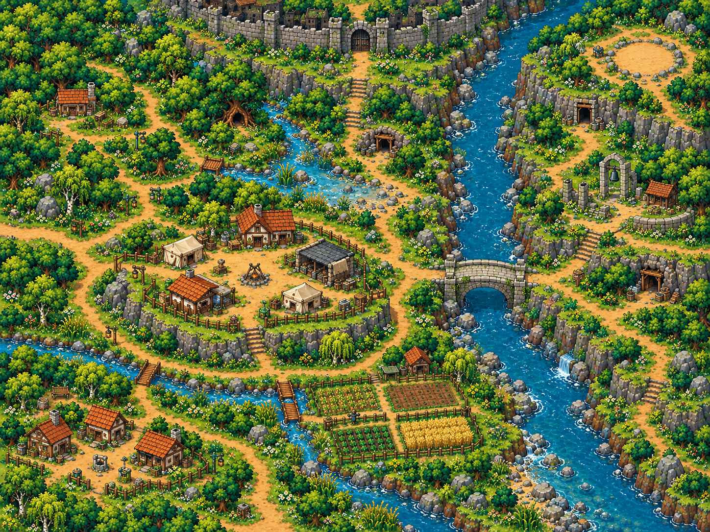

Đã có lượt chi tiết mới: Xem r016 · thêm 20 cụm đạo cụ vào game.
Vành lũy Bắc và Trại Bình Minh · r015
Ảnh gameplay mới sau khi dựng lại thành cong, sân trại và sửa các tuyến tiếp cận. Các phiên bản r010–r013 là ảnh lưu trữ, không phải map hiện tại.
Thiết kế toàn vùng

Map thật hiện tại

Đối chiếu khu vực
Chi tiết từ bản thiết kế
Trích vùng từ concept, không phải bản chơi.
Trong game · r015

Đã sửa
- Thành cong liền khối, tháp/cổng và các mái nhà sau tường; footprint đa giác theo chân thành.
- Sân trước cổng nối với một lối lên rõ ràng; nhãn vùng và điểm đến trước cổng được tách riêng.
- Năm công trình trại quanh sân chung, bảy phân khu; dọn cụm cây thấp giữa sân và rào chắn đường.
- Đường lên cầu gỗ đúng trục, nhánh tới hầm dừng trước cửa; đường vòng kiểm tra theo collision thật.
- Nội suy cao độ qua các tam giác chung cạnh, sửa khựng ở mép dốc.
Cổng thành hiện đóng, chưa có nội thất. Chưa xác nhận toàn bộ map đạt80% hình mẫu; nước, một số mặt vách và mặt hông/lưng công trình còn cần hoàn thiện.